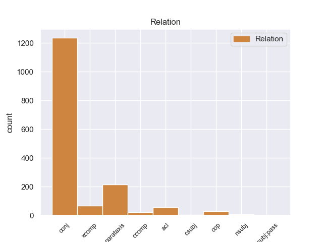
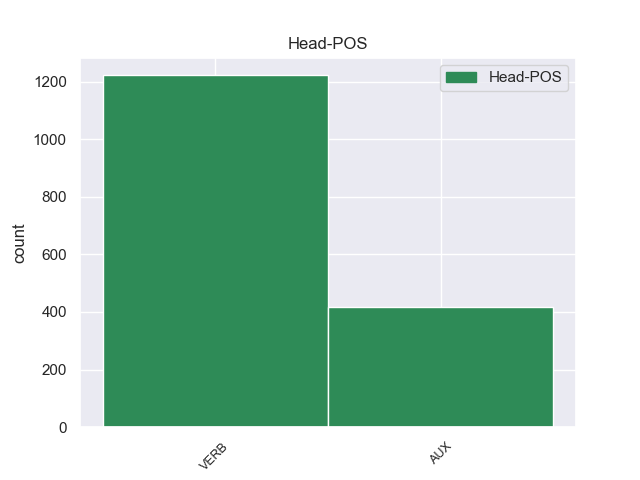
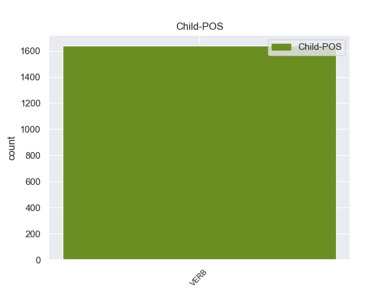

Distribution of features within this leaf



Agreement Rules sorted by frequency.
- When the dependent token is the conjunct(conj) of the head token, and the head token is VERB and the dependent token is VERB.
1 Quando _ _ _ _ 0 _ _ _
2 il _ _ _ _ 0 _ _ _
3 terremoto _ _ _ _ 0 _ _ _
4 è _ _ _ _ 0 _ _ _
5 forte _ _ _ _ 0 _ _ _
6 , _ _ _ _ 0 _ _ _
7 si _ _ _ _ 0 _ _ _
8 rovinano rovinare VERB V Mood=Ind|Number=Plur|Person=3|Tense=Pres|VerbForm=Fin 0 _ _ _
9 o _ _ _ _ 0 _ _ _
10 crollano crollare VERB V Mood=Ind|Number=Plur|Person=3|Tense=Pres|VerbForm=Fin 8 conj 8:conj:o _
11 anche _ _ _ _ 0 _ _ _
12 le _ _ _ _ 0 _ _ _
13 case _ _ _ _ 0 _ _ _
14 e _ _ _ _ 0 _ _ _
15 i _ _ _ _ 0 _ _ _
16 palazzi _ _ _ _ 0 _ _ _
17 . _ _ _ _ 0 _ _ _
1 Referendum _ _ _ _ 0 _ _ _
2 è essere AUX V Mood=Ind|Number=Sing|Person=3|Tense=Pres|VerbForm=Fin 0 _ _ _
3 una _ _ _ _ 0 _ _ _
4 parola _ _ _ _ 0 _ _ _
5 latina _ _ _ _ 0 _ _ _
6 e _ _ _ _ 0 _ _ _
7 indica indicare VERB V Mood=Ind|Number=Sing|Person=3|Tense=Pres|VerbForm=Fin 2 conj 4:conj:e _
8 la _ _ _ _ 0 _ _ _
9 votazione _ _ _ _ 0 _ _ _
10 con _ _ _ _ 0 _ _ _
11 la _ _ _ _ 0 _ _ _
12 quale _ _ _ _ 0 _ _ _
13 tutti _ _ _ _ 0 _ _ _
14 i _ _ _ _ 0 _ _ _
15 cittadini _ _ _ _ 0 _ _ _
16 decidono _ _ _ _ 0 _ _ _
17 direttamente _ _ _ _ 0 _ _ _
18 qualcosa _ _ _ _ 0 _ _ _
19 . _ _ _ _ 0 _ _ _
1 " _ _ _ _ 0 _ _ _
2 Quello _ _ _ _ 0 _ _ _
3 che _ _ _ _ 0 _ _ _
4 Balzac _ _ _ _ 0 _ _ _
5 ha _ _ _ _ 0 _ _ _
6 iniziato _ _ _ _ 0 _ _ _
7 " _ _ _ _ 0 _ _ _
8 , _ _ _ _ 0 _ _ _
9 dice dire VERB V Mood=Ind|Number=Sing|Person=3|Tense=Pres|VerbForm=Fin 14 parataxis 15:parataxis _
10 Lehan _ _ _ _ 0 _ _ _
11 , _ _ _ _ 0 _ _ _
12 " _ _ _ _ 0 _ _ _
13 Flaubert _ _ _ _ 0 _ _ _
14 ha avere AUX VA Mood=Ind|Number=Sing|Person=3|Tense=Pres|VerbForm=Fin 0 _ _ _
15 aiutato _ _ _ _ 0 _ _ _
16 a _ _ _ _ 0 _ _ _
17 finir _ _ _ _ 0 _ _ _
18 lo _ _ _ _ 0 _ _ _
19 . _ _ _ _ 0 _ _ _
1 Durante _ _ _ _ 0 _ _ _
2 la _ _ _ _ 0 _ _ _
3 staffetta _ _ _ _ 0 _ _ _
4 , _ _ _ _ 0 _ _ _
5 i _ _ _ _ 0 _ _ _
6 nuotatori _ _ _ _ 0 _ _ _
7 fanno fare VERB V Mood=Ind|Number=Plur|Person=3|Tense=Pres|VerbForm=Fin 0 _ _ _
8 una _ _ _ _ 0 _ _ _
9 squadra _ _ _ _ 0 _ _ _
10 di _ _ _ _ 0 _ _ _
11 4 _ _ _ _ 0 _ _ _
12 persone _ _ _ _ 0 _ _ _
13 : _ _ _ _ 0 _ _ _
14 ogni _ _ _ _ 0 _ _ _
15 nuotatore _ _ _ _ 0 _ _ _
16 nuota nuotare VERB V Mood=Ind|Number=Sing|Person=3|Tense=Pres|VerbForm=Fin 7 parataxis 7:parataxis _
17 solo _ _ _ _ 0 _ _ _
18 per _ _ _ _ 0 _ _ _
19 una _ _ _ _ 0 _ _ _
20 parte _ _ _ _ 0 _ _ _
21 di _ _ _ _ 0 _ _ _
22 il _ _ _ _ 0 _ _ _
23 percorso _ _ _ _ 0 _ _ _
24 di _ _ _ _ 0 _ _ _
25 gara _ _ _ _ 0 _ _ _
26 . _ _ _ _ 0 _ _ _
1 Il _ _ _ _ 0 _ _ _
2 primo _ _ _ _ 0 _ _ _
3 disco _ _ _ _ 0 _ _ _
4 di _ _ _ _ 0 _ _ _
5 Norah _ _ _ _ 0 _ _ _
6 Jones _ _ _ _ 0 _ _ _
7 è _ _ _ _ 0 _ _ _
8 di _ _ _ _ 0 _ _ _
9 il _ _ _ _ 0 _ _ _
10 2002 _ _ _ _ 0 _ _ _
11 e _ _ _ _ 0 _ _ _
12 si _ _ _ _ 0 _ _ _
13 chiama _ _ _ _ 0 _ _ _
14 Come _ _ _ _ 0 _ _ _
15 away _ _ _ _ 0 _ _ _
16 with _ _ _ _ 0 _ _ _
17 me _ _ _ _ 0 _ _ _
18 che _ _ _ _ 0 _ _ _
19 significa significare VERB V Mood=Ind|Number=Sing|Person=3|Tense=Pres|VerbForm=Fin 0 _ _ _
20 “ _ _ _ _ 0 _ _ _
21 Vieni Vieni VERB V Mood=Ind|Number=Sing|Person=2|Tense=Pres|VerbForm=Fin 19 xcomp 19:xcomp _
22 via _ _ _ _ 0 _ _ _
23 con _ _ _ _ 0 _ _ _
24 me _ _ _ _ 0 _ _ _
25 ” _ _ _ _ 0 _ _ _
26 . _ _ _ _ 0 _ _ _
1 Il _ _ _ _ 0 _ _ _
2 titolo _ _ _ _ 0 _ _ _
3 di _ _ _ _ 0 _ _ _
4 il _ _ _ _ 0 _ _ _
5 nuovo _ _ _ _ 0 _ _ _
6 film _ _ _ _ 0 _ _ _
7 è essere VERB V Mood=Ind|Number=Sing|Person=3|Tense=Pres|VerbForm=Fin 0 _ _ _
8 Caterina _ _ _ _ 0 _ _ _
9 va andare VERB V Mood=Ind|Number=Sing|Person=3|Tense=Pres|VerbForm=Fin 7 ccomp 7:ccomp _
10 in _ _ _ _ 0 _ _ _
11 città _ _ _ _ 0 _ _ _
12 . _ _ _ _ 0 _ _ _
1 I _ _ _ _ 0 _ _ _
2 due _ _ _ _ 0 _ _ _
3 fattori _ _ _ _ 0 _ _ _
4 principali _ _ _ _ 0 _ _ _
5 che _ _ _ _ 0 _ _ _
6 hanno _ _ _ _ 0 _ _ _
7 guidato _ _ _ _ 0 _ _ _
8 questo _ _ _ _ 0 _ _ _
9 incremento _ _ _ _ 0 _ _ _
10 sono _ _ _ _ 0 _ _ _
11 stati essere AUX V Gender=Masc|Number=Plur|Tense=Past|VerbForm=Part 0 _ _ _
12 l' _ _ _ _ 0 _ _ _
13 espansione _ _ _ _ 0 _ _ _
14 di _ _ _ _ 0 _ _ _
15 il _ _ _ _ 0 _ _ _
16 credito _ _ _ _ 0 _ _ _
17 e _ _ _ _ 0 _ _ _
18 il _ _ _ _ 0 _ _ _
19 rapido _ _ _ _ 0 _ _ _
20 aumento _ _ _ _ 0 _ _ _
21 di _ _ _ _ 0 _ _ _
22 le _ _ _ _ 0 _ _ _
23 risorse _ _ _ _ 0 _ _ _
24 dedite _ _ _ _ 0 _ _ _
25 a _ _ _ _ 0 _ _ _
26 la _ _ _ _ 0 _ _ _
27 gestione _ _ _ _ 0 _ _ _
28 di _ _ _ _ 0 _ _ _
29 gli _ _ _ _ 0 _ _ _
30 asset _ _ _ _ 0 _ _ _
31 ( _ _ _ _ 0 _ _ _
32 associata associare VERB V Gender=Fem|Number=Sing|Tense=Past|VerbForm=Part 11 acl 13:acl SpaceAfter=No
33 , _ _ _ _ 0 _ _ _
34 non _ _ _ _ 0 _ _ _
35 a _ _ _ _ 0 _ _ _
36 caso _ _ _ _ 0 _ _ _
37 , _ _ _ _ 0 _ _ _
38 a _ _ _ _ 0 _ _ _
39 la _ _ _ _ 0 _ _ _
40 crescita _ _ _ _ 0 _ _ _
41 esponenziale _ _ _ _ 0 _ _ _
42 di _ _ _ _ 0 _ _ _
43 le _ _ _ _ 0 _ _ _
44 entrate _ _ _ _ 0 _ _ _
45 di _ _ _ _ 0 _ _ _
46 il _ _ _ _ 0 _ _ _
47 settore _ _ _ _ 0 _ _ _
48 finanziario _ _ _ _ 0 _ _ _
49 ) _ _ _ _ 0 _ _ _
50 . _ _ _ _ 0 _ _ _
1 Il _ _ _ _ 0 _ _ _
2 delegante delegare VERB V Number=Sing|Tense=Pres|VerbForm=Part 3 nsubj 4:nsubj _
3 può potere AUX VM Mood=Ind|Number=Sing|Person=3|Tense=Pres|VerbForm=Fin 0 _ _ _
4 revocare _ _ _ _ 0 _ _ _
5 la _ _ _ _ 0 _ _ _
6 delegazione _ _ _ _ 0 _ _ _
7 , _ _ _ _ 0 _ _ _
8 fino _ _ _ _ 0 _ _ _
9 a _ _ _ _ 0 _ _ _
10 quando _ _ _ _ 0 _ _ _
11 il _ _ _ _ 0 _ _ _
12 delegato _ _ _ _ 0 _ _ _
13 non _ _ _ _ 0 _ _ _
14 abbia _ _ _ _ 0 _ _ _
15 assunto _ _ _ _ 0 _ _ _
16 l' _ _ _ _ 0 _ _ _
17 obbligazione _ _ _ _ 0 _ _ _
18 in _ _ _ _ 0 _ _ _
19 confronto _ _ _ _ 0 _ _ _
20 di _ _ _ _ 0 _ _ _
21 il _ _ _ _ 0 _ _ _
22 delegatario _ _ _ _ 0 _ _ _
23 o _ _ _ _ 0 _ _ _
24 non _ _ _ _ 0 _ _ _
25 abbia _ _ _ _ 0 _ _ _
26 eseguito _ _ _ _ 0 _ _ _
27 il _ _ _ _ 0 _ _ _
28 pagamento _ _ _ _ 0 _ _ _
29 a _ _ _ _ 0 _ _ _
30 favore _ _ _ _ 0 _ _ _
31 di _ _ _ _ 0 _ _ _
32 questo _ _ _ _ 0 _ _ _
33 . _ _ _ _ 0 _ _ _
1 Alcuni _ _ _ _ 0 _ _ _
2 titoli _ _ _ _ 0 _ _ _
3 di _ _ _ _ 0 _ _ _
4 le _ _ _ _ 0 _ _ _
5 nuove _ _ _ _ 0 _ _ _
6 canzoni _ _ _ _ 0 _ _ _
7 sono essere AUX V Mood=Ind|Number=Plur|Person=3|Tense=Pres|VerbForm=Fin 0 _ _ _
8 Vai andare VERB V Mood=Imp|Number=Sing|Person=2|Tense=Pres|VerbForm=Fin 7 cop 0:root _
9 e _ _ _ _ 0 _ _ _
10 vai _ _ _ _ 0 _ _ _
11 e _ _ _ _ 0 _ _ _
12 vai _ _ _ _ 0 _ _ _
13 , _ _ _ _ 0 _ _ _
14 Portati _ _ _ _ 0 _ _ _
15 via _ _ _ _ 0 _ _ _
16 , _ _ _ _ 0 _ _ _
17 Fragile _ _ _ _ 0 _ _ _
18 , _ _ _ _ 0 _ _ _
19 Se _ _ _ _ 0 _ _ _
20 , _ _ _ _ 0 _ _ _
21 Fra _ _ _ _ 0 _ _ _
22 mille _ _ _ _ 0 _ _ _
23 anni _ _ _ _ 0 _ _ _
24 . _ _ _ _ 0 _ _ _
1 Quando _ _ _ _ 0 _ _ _
2 ci _ _ _ _ 0 _ _ _
3 furono essere VERB V Mood=Ind|Number=Plur|Person=3|Tense=Past|VerbForm=Fin 0 _ _ _
4 le _ _ _ _ 0 _ _ _
5 rivolte rivolgere VERB V Gender=Fem|Number=Plur|Tense=Past|VerbForm=Part 3 nsubj 3:nsubj _
6 di _ _ _ _ 0 _ _ _
7 Los _ _ _ _ 0 _ _ _
8 Angeles _ _ _ _ 0 _ _ _
9 ? _ _ _ _ 0 _ _ _
1 Di _ _ _ _ 0 _ _ _
2 i _ _ _ _ 0 _ _ _
3 56 _ _ _ _ 0 _ _ _
4 progetti _ _ _ _ 0 _ _ _
5 totali _ _ _ _ 0 _ _ _
6 , _ _ _ _ 0 _ _ _
7 41 _ _ _ _ 0 _ _ _
8 nascono _ _ _ _ 0 _ _ _
9 da _ _ _ _ 0 _ _ _
10 l' _ _ _ _ 0 _ _ _
11 iniziativa _ _ _ _ 0 _ _ _
12 di _ _ _ _ 0 _ _ _
13 le _ _ _ _ 0 _ _ _
14 autorità _ _ _ _ 0 _ _ _
15 competenti _ _ _ _ 0 _ _ _
16 di _ _ _ _ 0 _ _ _
17 gli _ _ _ _ 0 _ _ _
18 Stati _ _ _ _ 0 _ _ _
19 membri _ _ _ _ 0 _ _ _
20 , _ _ _ _ 0 _ _ _
21 mentre _ _ _ _ 0 _ _ _
22 i _ _ _ _ 0 _ _ _
23 restanti restare VERB V Number=Plur|Tense=Pres|VerbForm=Part 25 nsubj:pass 26:nsubj:pass _
24 15 _ _ _ _ 0 _ _ _
25 sono essere AUX VA Mood=Ind|Number=Plur|Person=3|Tense=Pres|VerbForm=Fin 0 _ _ _
26 promossi _ _ _ _ 0 _ _ _
27 su _ _ _ _ 0 _ _ _
28 iniziativa _ _ _ _ 0 _ _ _
29 di _ _ _ _ 0 _ _ _
30 la _ _ _ _ 0 _ _ _
31 Commissione _ _ _ _ 0 _ _ _
32 / _ _ _ _ 0 _ _ _
33 di _ _ _ _ 0 _ _ _
34 l' _ _ _ _ 0 _ _ _
35 OLAF _ _ _ _ 0 _ _ _
36 . _ _ _ _ 0 _ _ _
1 Ma _ _ _ _ 0 _ _ _
2 non _ _ _ _ 0 _ _ _
3 è essere AUX V Mood=Ind|Number=Sing|Person=3|Tense=Pres|VerbForm=Fin 0 _ _ _
4 certo _ _ _ _ 0 _ _ _
5 cosa _ _ _ _ 0 _ _ _
6 li _ _ _ _ 0 _ _ _
7 attende attendere VERB V Mood=Ind|Number=Sing|Person=3|Tense=Pres|VerbForm=Fin 3 csubj 4:csubj _
8 a _ _ _ _ 0 _ _ _
9 la _ _ _ _ 0 _ _ _
10 fine _ _ _ _ 0 _ _ _
11 di _ _ _ _ 0 _ _ _
12 il _ _ _ _ 0 _ _ _
13 viaggio _ _ _ _ 0 _ _ _
14 : _ _ _ _ 0 _ _ _
1 Per _ _ _ _ 0 _ _ _
2 la _ _ _ _ 0 _ _ _
3 prima _ _ _ _ 0 _ _ _
4 composizione _ _ _ _ 0 _ _ _
5 di _ _ _ _ 0 _ _ _
6 il _ _ _ _ 0 _ _ _
7 Senato _ _ _ _ 0 _ _ _
8 di _ _ _ _ 0 _ _ _
9 la _ _ _ _ 0 _ _ _
10 Repubblica _ _ _ _ 0 _ _ _
11 sono _ _ _ _ 0 _ _ _
12 nominati _ _ _ _ 0 _ _ _
13 senatori _ _ _ _ 0 _ _ _
14 , _ _ _ _ 0 _ _ _
15 con _ _ _ _ 0 _ _ _
16 decreto _ _ _ _ 0 _ _ _
17 di _ _ _ _ 0 _ _ _
18 il _ _ _ _ 0 _ _ _
19 Presidente _ _ _ _ 0 _ _ _
20 di _ _ _ _ 0 _ _ _
21 la _ _ _ _ 0 _ _ _
22 Repubblica _ _ _ _ 0 _ _ _
23 , _ _ _ _ 0 _ _ _
24 i _ _ _ _ 0 _ _ _
25 deputati _ _ _ _ 0 _ _ _
26 di _ _ _ _ 0 _ _ _
27 l' _ _ _ _ 0 _ _ _
28 Assemblea _ _ _ _ 0 _ _ _
29 Costituente _ _ _ _ 0 _ _ _
30 che _ _ _ _ 0 _ _ _
31 posseggono _ _ _ _ 0 _ _ _
32 i _ _ _ _ 0 _ _ _
33 requisiti _ _ _ _ 0 _ _ _
34 di _ _ _ _ 0 _ _ _
35 legge _ _ _ _ 0 _ _ _
36 per _ _ _ _ 0 _ _ _
37 essere _ _ _ _ 0 _ _ _
38 senatori _ _ _ _ 0 _ _ _
39 e _ _ _ _ 0 _ _ _
40 che _ _ _ _ 0 _ _ _
41 : _ _ _ _ 0 _ _ _
42 * _ _ _ _ 0 _ _ _
43 sono _ _ _ _ 0 _ _ _
44 stati _ _ _ _ 0 _ _ _
45 presidenti _ _ _ _ 0 _ _ _
46 di _ _ _ _ 0 _ _ _
47 il _ _ _ _ 0 _ _ _
48 Consiglio _ _ _ _ 0 _ _ _
49 di _ _ _ _ 0 _ _ _
50 i _ _ _ _ 0 _ _ _
51 Ministri _ _ _ _ 0 _ _ _
52 o _ _ _ _ 0 _ _ _
53 di _ _ _ _ 0 _ _ _
54 Assemblee _ _ _ _ 0 _ _ _
55 legislative _ _ _ _ 0 _ _ _
56 , _ _ _ _ 0 _ _ _
57 * _ _ _ _ 0 _ _ _
58 hanno _ _ _ _ 0 _ _ _
59 fatto _ _ _ _ 0 _ _ _
60 parte _ _ _ _ 0 _ _ _
61 di _ _ _ _ 0 _ _ _
62 il _ _ _ _ 0 _ _ _
63 disciolto _ _ _ _ 0 _ _ _
64 Senato _ _ _ _ 0 _ _ _
65 , _ _ _ _ 0 _ _ _
66 * _ _ _ _ 0 _ _ _
67 hanno _ _ _ _ 0 _ _ _
68 avuto _ _ _ _ 0 _ _ _
69 almeno _ _ _ _ 0 _ _ _
70 tre _ _ _ _ 0 _ _ _
71 elezioni _ _ _ _ 0 _ _ _
72 , _ _ _ _ 0 _ _ _
73 compresa _ _ _ _ 0 _ _ _
74 quella _ _ _ _ 0 _ _ _
75 a _ _ _ _ 0 _ _ _
76 l' _ _ _ _ 0 _ _ _
77 Assemblea _ _ _ _ 0 _ _ _
78 Costituente _ _ _ _ 0 _ _ _
79 , _ _ _ _ 0 _ _ _
80 * _ _ _ _ 0 _ _ _
81 sono _ _ _ _ 0 _ _ _
82 stati essere AUX VA Gender=Masc|Number=Plur|Tense=Past|VerbForm=Part 0 _ _ _
83 dichiarati _ _ _ _ 0 _ _ _
84 decaduti decadere VERB V Gender=Masc|Number=Plur|Tense=Past|VerbForm=Part 82 xcomp 83:xcomp _
85 in _ _ _ _ 0 _ _ _
86 la _ _ _ _ 0 _ _ _
87 seduta _ _ _ _ 0 _ _ _
88 di _ _ _ _ 0 _ _ _
89 la _ _ _ _ 0 _ _ _
90 Camera _ _ _ _ 0 _ _ _
91 di _ _ _ _ 0 _ _ _
92 i _ _ _ _ 0 _ _ _
93 deputati _ _ _ _ 0 _ _ _
94 di _ _ _ _ 0 _ _ _
95 il _ _ _ _ 0 _ _ _
96 9 _ _ _ _ 0 _ _ _
97 novembre _ _ _ _ 0 _ _ _
98 1926 _ _ _ _ 0 _ _ _
99 , _ _ _ _ 0 _ _ _
100 * _ _ _ _ 0 _ _ _
101 hanno _ _ _ _ 0 _ _ _
102 scontato _ _ _ _ 0 _ _ _
103 la _ _ _ _ 0 _ _ _
104 pena _ _ _ _ 0 _ _ _
105 di _ _ _ _ 0 _ _ _
106 la _ _ _ _ 0 _ _ _
107 reclusione _ _ _ _ 0 _ _ _
108 non _ _ _ _ 0 _ _ _
109 inferiore _ _ _ _ 0 _ _ _
110 a _ _ _ _ 0 _ _ _
111 cinque _ _ _ _ 0 _ _ _
112 anni _ _ _ _ 0 _ _ _
113 in _ _ _ _ 0 _ _ _
114 seguito _ _ _ _ 0 _ _ _
115 a _ _ _ _ 0 _ _ _
116 condanna _ _ _ _ 0 _ _ _
117 di _ _ _ _ 0 _ _ _
118 il _ _ _ _ 0 _ _ _
119 tribunale _ _ _ _ 0 _ _ _
120 speciale _ _ _ _ 0 _ _ _
121 fascista _ _ _ _ 0 _ _ _
122 per _ _ _ _ 0 _ _ _
123 la _ _ _ _ 0 _ _ _
124 difesa _ _ _ _ 0 _ _ _
125 di _ _ _ _ 0 _ _ _
126 lo _ _ _ _ 0 _ _ _
127 Stato _ _ _ _ 0 _ _ _
128 . _ _ _ _ 0 _ _ _
Disagree Examples:
1 " _ _ _ _ 0 _ _ _
2 Il _ _ _ _ 0 _ _ _
3 Papa _ _ _ _ 0 _ _ _
4 ha _ _ _ _ 0 _ _ _
5 compiuto compiere VERB V Gender=Masc|Number=Sing|Tense=Past|VerbForm=Part 0 _ _ _
6 un _ _ _ _ 0 _ _ _
7 enorme _ _ _ _ 0 _ _ _
8 passo _ _ _ _ 0 _ _ _
9 in _ _ _ _ 0 _ _ _
10 avanti _ _ _ _ 0 _ _ _
11 , _ _ _ _ 0 _ _ _
12 anche _ _ _ _ 0 _ _ _
13 rispetto _ _ _ _ 0 _ _ _
14 a _ _ _ _ 0 _ _ _
15 la _ _ _ _ 0 _ _ _
16 " _ _ _ _ 0 _ _ _
17 Mulieris _ _ _ _ 0 _ _ _
18 dignitatem _ _ _ _ 0 _ _ _
19 " _ _ _ _ 0 _ _ _
20 - _ _ _ _ 0 _ _ _
21 afferma affermare VERB V Mood=Ind|Number=Sing|Person=3|Tense=Pres|VerbForm=Fin 5 parataxis 5:parataxis _
22 - _ _ _ _ 0 _ _ _
23 . _ _ _ _ 0 _ _ _
1 No _ _ _ _ 0 _ _ _
2 , _ _ _ _ 0 _ _ _
3 Wojtyla _ _ _ _ 0 _ _ _
4 non _ _ _ _ 0 _ _ _
5 lo _ _ _ _ 0 _ _ _
6 avevo _ _ _ _ 0 _ _ _
7 mai _ _ _ _ 0 _ _ _
8 sentito sentire VERB V Gender=Masc|Number=Sing|Tense=Past|VerbForm=Part 0 _ _ _
9 parlare _ _ _ _ 0 _ _ _
10 così _ _ _ _ 0 _ _ _
11 ... _ _ _ _ 0 _ _ _
12 e _ _ _ _ 0 _ _ _
13 questo _ _ _ _ 0 _ _ _
14 gli _ _ _ _ 0 _ _ _
15 farà fare VERB V Mood=Ind|Number=Sing|Person=3|Tense=Fut|VerbForm=Fin 8 conj 8:conj:e _
16 conquistare _ _ _ _ 0 _ _ _
17 molti _ _ _ _ 0 _ _ _
18 consensi _ _ _ _ 0 _ _ _
19 a _ _ _ _ 0 _ _ _
20 Pechino _ _ _ _ 0 _ _ _
21 " _ _ _ _ 0 _ _ _
22 . _ _ _ _ 0 _ _ _
1 In _ _ _ _ 0 _ _ _
2 un _ _ _ _ 0 _ _ _
3 certo _ _ _ _ 0 _ _ _
4 senso _ _ _ _ 0 _ _ _
5 sì _ _ _ _ 0 _ _ _
6 , _ _ _ _ 0 _ _ _
7 perché _ _ _ _ 0 _ _ _
8 resta restare VERB V Mood=Ind|Number=Sing|Person=3|Tense=Pres|VerbForm=Fin 0 _ _ _
9 e _ _ _ _ 0 _ _ _
10 resterà restare VERB V Mood=Ind|Number=Sing|Person=3|Tense=Fut|VerbForm=Fin 8 conj 5:advcl:perché|8:conj:e _
11 in _ _ _ _ 0 _ _ _
12 i _ _ _ _ 0 _ _ _
13 governi _ _ _ _ 0 _ _ _
14 responsabili _ _ _ _ 0 _ _ _
15 la _ _ _ _ 0 _ _ _
16 consapevolezza _ _ _ _ 0 _ _ _
17 di _ _ _ _ 0 _ _ _
18 il _ _ _ _ 0 _ _ _
19 limite _ _ _ _ 0 _ _ _
20 invalicabile _ _ _ _ 0 _ _ _
21 , _ _ _ _ 0 _ _ _
22 perché _ _ _ _ 0 _ _ _
23 la _ _ _ _ 0 _ _ _
24 memoria _ _ _ _ 0 _ _ _
25 di _ _ _ _ 0 _ _ _
26 l' _ _ _ _ 0 _ _ _
27 olocausto _ _ _ _ 0 _ _ _
28 nucleare _ _ _ _ 0 _ _ _
29 farà _ _ _ _ 0 _ _ _
30 valere _ _ _ _ 0 _ _ _
31 i _ _ _ _ 0 _ _ _
32 suoi _ _ _ _ 0 _ _ _
33 diritti _ _ _ _ 0 _ _ _
34 . _ _ _ _ 0 _ _ _
1 Ma _ _ _ _ 0 _ _ _
2 è _ _ _ _ 0 _ _ _
3 stata _ _ _ _ 0 _ _ _
4 la _ _ _ _ 0 _ _ _
5 memoria _ _ _ _ 0 _ _ _
6 a _ _ _ _ 0 _ _ _
7 garantire _ _ _ _ 0 _ _ _
8 fino _ _ _ _ 0 _ _ _
9 a _ _ _ _ 0 _ _ _
10 ieri _ _ _ _ 0 _ _ _
11 la _ _ _ _ 0 _ _ _
12 pace _ _ _ _ 0 _ _ _
13 in _ _ _ _ 0 _ _ _
14 Europa _ _ _ _ 0 _ _ _
15 , _ _ _ _ 0 _ _ _
16 o _ _ _ _ 0 _ _ _
17 è _ _ _ _ 0 _ _ _
18 stata _ _ _ _ 0 _ _ _
19 piuttosto _ _ _ _ 0 _ _ _
20 l' _ _ _ _ 0 _ _ _
21 esistenza _ _ _ _ 0 _ _ _
22 di _ _ _ _ 0 _ _ _
23 due _ _ _ _ 0 _ _ _
24 blocchi _ _ _ _ 0 _ _ _
25 che _ _ _ _ 0 _ _ _
26 attorno _ _ _ _ 0 _ _ _
27 a _ _ _ _ 0 _ _ _
28 essa _ _ _ _ 0 _ _ _
29 si _ _ _ _ 0 _ _ _
30 erano _ _ _ _ 0 _ _ _
31 organizzati _ _ _ _ 0 _ _ _
32 , _ _ _ _ 0 _ _ _
33 che _ _ _ _ 0 _ _ _
34 avevano _ _ _ _ 0 _ _ _
35 trasformato trasformare VERB V Gender=Masc|Number=Sing|Tense=Past|VerbForm=Part 0 _ _ _
36 la _ _ _ _ 0 _ _ _
37 paura _ _ _ _ 0 _ _ _
38 di _ _ _ _ 0 _ _ _
39 la _ _ _ _ 0 _ _ _
40 Bomba _ _ _ _ 0 _ _ _
41 in _ _ _ _ 0 _ _ _
42 ideologia _ _ _ _ 0 _ _ _
43 comune _ _ _ _ 0 _ _ _
44 malgrado _ _ _ _ 0 _ _ _
45 fossero _ _ _ _ 0 _ _ _
46 l' _ _ _ _ 0 _ _ _
47 uno _ _ _ _ 0 _ _ _
48 democratico _ _ _ _ 0 _ _ _
49 e _ _ _ _ 0 _ _ _
50 l' _ _ _ _ 0 _ _ _
51 altro _ _ _ _ 0 _ _ _
52 totalitario _ _ _ _ 0 _ _ _
53 , _ _ _ _ 0 _ _ _
54 che _ _ _ _ 0 _ _ _
55 tenendo _ _ _ _ 0 _ _ _
56 il _ _ _ _ 0 _ _ _
57 dito _ _ _ _ 0 _ _ _
58 su _ _ _ _ 0 _ _ _
59 il _ _ _ _ 0 _ _ _
60 grilletto _ _ _ _ 0 _ _ _
61 di _ _ _ _ 0 _ _ _
62 l' _ _ _ _ 0 _ _ _
63 apocalisse _ _ _ _ 0 _ _ _
64 stabilivano stabilire VERB V Mood=Ind|Number=Plur|Person=3|Tense=Imp|VerbForm=Fin 35 conj 24:acl:relcl|31:conj _
65 regole _ _ _ _ 0 _ _ _
66 e _ _ _ _ 0 _ _ _
67 confini _ _ _ _ 0 _ _ _
68 di _ _ _ _ 0 _ _ _
69 le _ _ _ _ 0 _ _ _
70 bombe _ _ _ _ 0 _ _ _
71 tollerate _ _ _ _ 0 _ _ _
72 ? _ _ _ _ 0 _ _ _
1 A _ _ _ _ 0 _ _ _
2 parte _ _ _ _ 0 _ _ _
3 le _ _ _ _ 0 _ _ _
4 bande _ _ _ _ 0 _ _ _
5 armate _ _ _ _ 0 _ _ _
6 ( _ _ _ _ 0 _ _ _
7 di _ _ _ _ 0 _ _ _
8 profughi _ _ _ _ 0 _ _ _
9 affamati _ _ _ _ 0 _ _ _
10 , _ _ _ _ 0 _ _ _
11 di _ _ _ _ 0 _ _ _
12 predoni _ _ _ _ 0 _ _ _
13 e _ _ _ _ 0 _ _ _
14 di _ _ _ _ 0 _ _ _
15 banditi _ _ _ _ 0 _ _ _
16 ) _ _ _ _ 0 _ _ _
17 che _ _ _ _ 0 _ _ _
18 lo _ _ _ _ 0 _ _ _
19 infestano _ _ _ _ 0 _ _ _
20 in _ _ _ _ 0 _ _ _
21 lungo _ _ _ _ 0 _ _ _
22 e _ _ _ _ 0 _ _ _
23 in _ _ _ _ 0 _ _ _
24 largo _ _ _ _ 0 _ _ _
25 , _ _ _ _ 0 _ _ _
26 perfino _ _ _ _ 0 _ _ _
27 polizia _ _ _ _ 0 _ _ _
28 e _ _ _ _ 0 _ _ _
29 soldati _ _ _ _ 0 _ _ _
30 hanno _ _ _ _ 0 _ _ _
31 abdicato abdicare VERB V Gender=Masc|Number=Sing|Tense=Past|VerbForm=Part 0 _ _ _
32 a _ _ _ _ 0 _ _ _
33 il _ _ _ _ 0 _ _ _
34 ruolo _ _ _ _ 0 _ _ _
35 di _ _ _ _ 0 _ _ _
36 tutori _ _ _ _ 0 _ _ _
37 di _ _ _ _ 0 _ _ _
38 l' _ _ _ _ 0 _ _ _
39 ordine _ _ _ _ 0 _ _ _
40 e _ _ _ _ 0 _ _ _
41 taglieggiano taglieggiare VERB V Mood=Ind|Number=Plur|Person=3|Tense=Pres|VerbForm=Fin 31 conj 31:conj:e _
42 la _ _ _ _ 0 _ _ _
43 popolazione _ _ _ _ 0 _ _ _
44 : _ _ _ _ 0 _ _ _